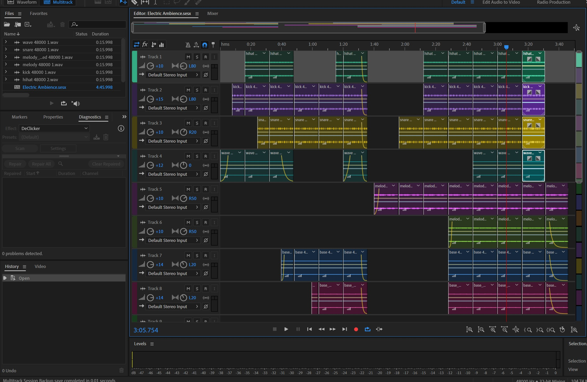
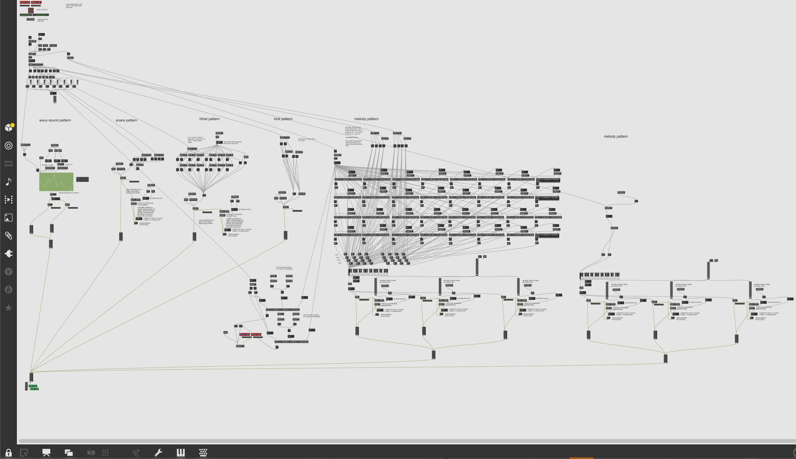
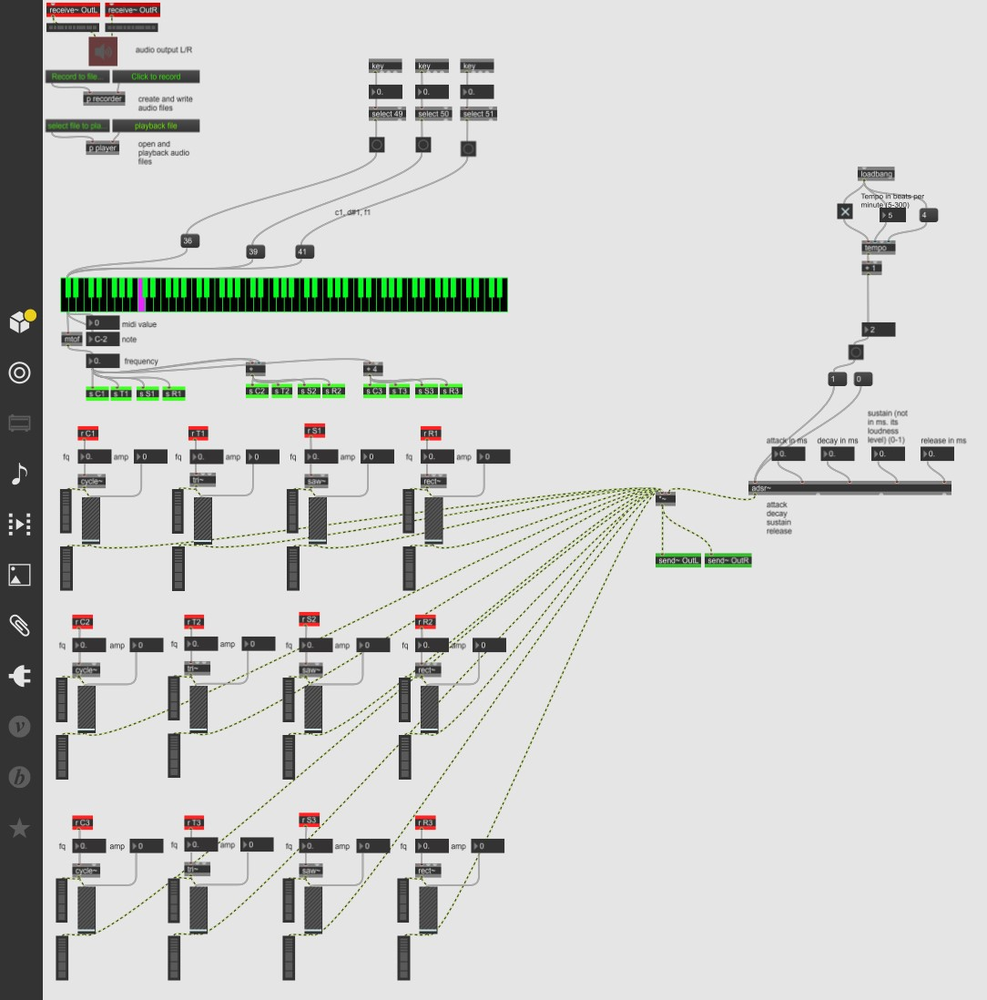
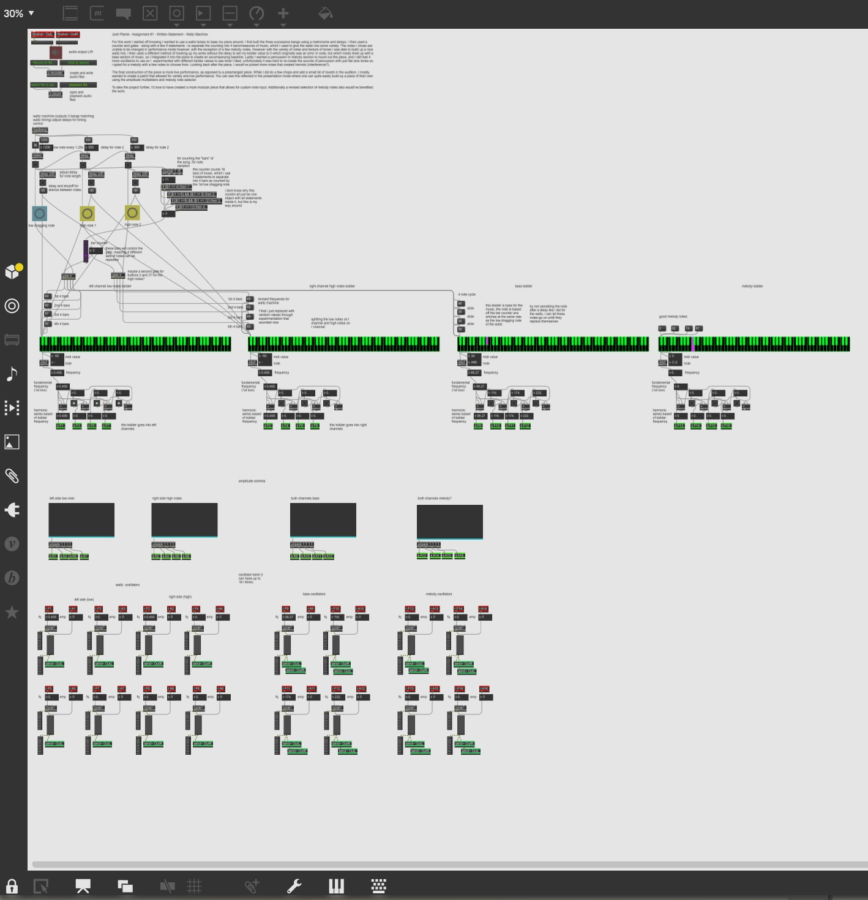

Project Summary
The following are a few samples of work I did for both my Sound Design and Electroacoustics courses I took at OCAD. They were created using MAX 8 MSP software, and Adobe Audition was used to arrange the pieces.
Audio and Music Tracks
*All of the following are meant to be listened to with headphones or earbuds*
01. Electric Ambience
This piece was the culmination of my Electroacoustic course, I love the way the second half turned out.
02. Thumper
Created by live mixing triangle, sine, saw, and rectangle waves with ADSR.
03. Last Ditch Effort
This work was made by repurposing a sample from the "Aria of the Soul" from the Persona 5 soundtrack.
04. Josh Sampler
For this work I recorded and arranged samples of my own voice to create a percussion composition.
05. Waltz Machine
Created purely with sine tones. Live recording.
Images
Click on any image to view it fullscreen in a new tab.



